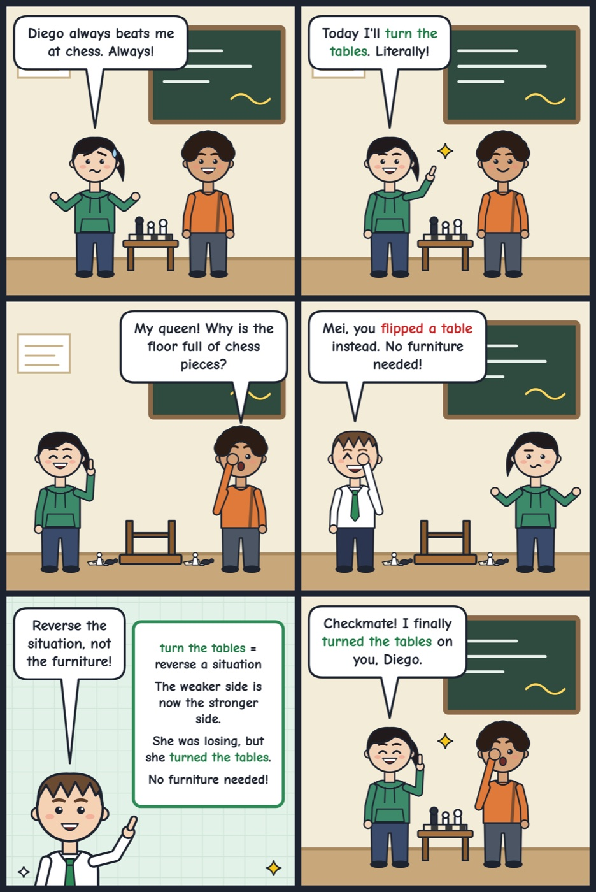

turn the tables
To reverse a situation so the other side is now in the weaker or stronger position.
She was losing the game, but she turned the tables in the last round.
'Turn the tables' means to reverse a situation. Nobody needs to move any furniture.

Your turn
Have you ever turned the tables on a friend? How?
Have you ever turned the tables on a friend? How?